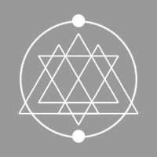
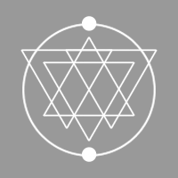

Rusty Quill Ltd. is a London-based UK entertainment production company and podcast network. We specialise in creating original, free-to-consume content whilst providing a platform for new and interesting voices and talent.
All our regular content is free to view, listen to, and share, but we also offer standard commission-based work on request and our Patreon supporters have access to exclusive backer-only content – check out our contact and support pages respectively for more information.
Our first project was the Rusty Quill Gaming podcast, a long-form Pathfinder actual play tabletop roleplaying campaign which launched in June 2015 and follows the adventures of a mixed ability group of comedians, improvisers, gamers, and writers playing an original game world. The series has more than 150 episodes in its catalogue and releases a new episode every week.
In March 2016, we launched our second series, one of the world’s most popular horror podcasts, the Magnus Archives. This ongoing long-form anthology details the supernatural cases under investigation by the Magnus Institute and its archivists and boasts a dedicated cult following in addition to multiple award nominations. The series has more than 150 episodes in its catalogue and releases a new episode every week.
Our third series Outliers, is a historic fiction podcast, produced in association with Historic Royal Palaces. It was launched in November 2017 and features a selection of stories from award-winning contemporary writers as they examine the perspectives of people often excluded from mainstream historical narratives.
Our lastest series, Stellar Firma, is a semi-improvised, dystopic, comedy podcast following the misadventures of a pair of inept designers as they attempt to generate bespoke planets based on audience suggestions. The show launched in February 2019.
We have a number of new in-house projects currently in development in addition to ongoing third-party production work and consultation.
| 
Alethiometrist
She/Her & He/Him |

Wears Duck Pyjamas
He/Him |
Can Talk to Animals
She/Her |
Particle Physicist
They/Them |
Wizard
She/Her |
Sword Boy
He/Him |